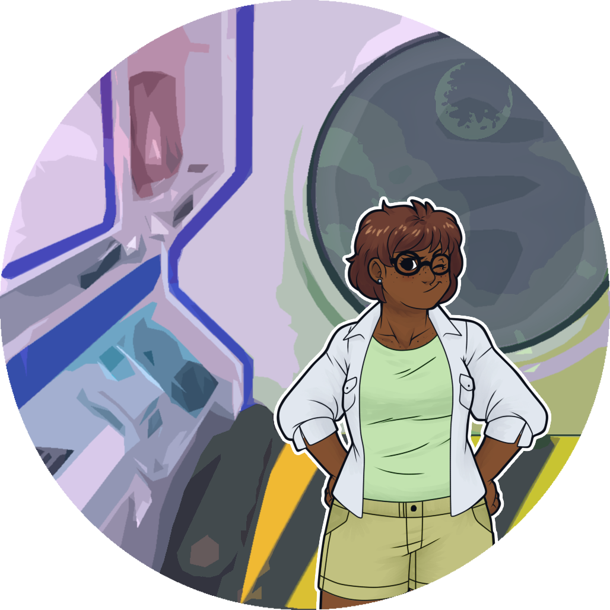
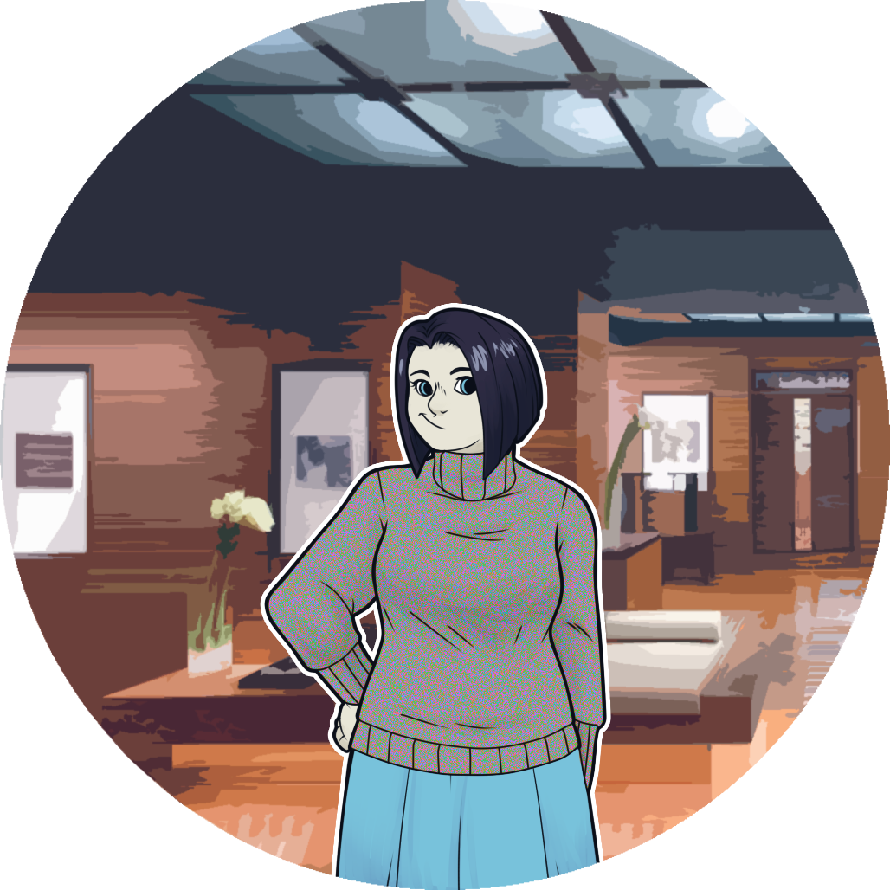

As the official historian for a new colony world its your privilege to record the events and preserve the unique heritage of what will no doubt be a thriving and successful community. Boundless opportunity and a place in history are with in your reach as you work side by side with your fellow colonists. I envy you a bright future on the colony world XB-137, surely in no time at all...
Ugh, official messages from the central worlds can be so overwrought; do they expect anyone to actually read them? You are too busy for this nonsense, you have a mandatory session with the Health and Wellness Android today and you have profiles on the Colony Biologist and Pastor to get started on.


TB: Hello. Welcome to your first session, my chosen name is Miranda. Remember nothing here is verboaten you should feel free to express yourself. Lets dive in.
You: Uh...

TB: Its perfectly normal to flounder around at during these things. Particularly with a non-human, I'm shore we'll be chums before long. I'll tell you what, why don't we push this appointment off until tomorrow afternoon. Sea you then!
Looks like you're schedule has been re-arranged for you. Hopefully the biologist won't mind if you start with her.

You: I really appreciate you letting me shadow you in the algae garden, Dr Chamoun I know we'd planned on a later time.
Dr: It's your job.
Dr: ...You might want to jot down some notes about these tanks. The re-purposing the ships fuel tanks saved on materials but we lost the first batch due to the repair nano. It's just not built to coexist with organics so we've had to design maintenance bot here on world.
Dr: Please don your mask while I take these readings, but feel free to record the proceedings.
You follow the busy scientist for several hour checking over the massive tanks and the algae they contain before heading over to the common to catch the first spiritual session lead by Ali.

You: That was a lovely service Ali.
Min: Why thank you. The first one is always the hardest. Still I'm very so many chose to attend and the common room worked as a worship space far better than I'd any right to hope. How are you finding the colony so far? What is your role? There is always so much to do and see.

You: I'm the historian I'll be interviewing everyone over the coming months and recording as much as I'm able.
Min: What a fascinating job with so many folks to meet. I look forward to seeing you again.
You after dinner you head back to the cramped space you call home while the fabricators are building more permanent residences. Tomorrow you'll get to do it all over again.
The next morning you meet Dr Chamoun for a tour of the colony greenhouse.
Dr: The greenhouse looks much more like something you'd see back on earth or one of the developed planets. Currently we've have a crop of Tomatoes almost ready to harvest, but even with the compressed growth cycle the greenhouse can't produce material as quickly as some of our other efforts.
You walk on in silence for a time.
Dr: [Bending down near one of the larger Tomatoes to pack some soil around the base of the plant] : Feed me, Seymour, Feed me.
You: ???
Dr: A line from Little Shop of Horrors.
You: ???
Dr: An old musical comedy that features a talking plant. Scientifically inaccurate of course, but a wonderful show all the same.
You spend the remaining tour of the greenhouse learning about growth optimization and the old movies the biologist likes to unearth from the cultural archive.
TB: Hello again. Don't you think its fishy that there is currently only one marine biologist for the entire colony? There dolphinitly should be a higher priority on aquatic matters. Its probably a fluke of some sort, maybe mention it to Dr Chamoun at some point.
Seems like Miranda just wants to talk about fish. You spend the rest of the meeting talking about aquatic life and the colony fish hatchery afterward you head over to the common room to find Ali.
Min: It's good to see you again. How have you been? Working hard on getting our little outpost into the historical archives I hope?
You: It takes time, just lately I've been touring the greenhouse with Dr Chamoun. It feels a bit odd to be writing things down when everyone else is so focused on keeping things running.
Min: Just as you say; it takes time. I've found my role frustrating from time to time, but then I remember I'm 137 light years from home and I get to see a new world take shape.
Your return to your room and check your messages. The first from Dr Chamoun: "Just a quick note to say there will be a showing of Dr Strangelove in the common room tonight if you wanted to see a classic movie. It starts at 8 and there is no need to take notes. Hope to see you there."
Miranda sends: "The eggs in the fish hatchery are starting to hatch! I've tapped into the feeds. Your new porpoise in life: stop by central processing tonight and view the miracle of new fish!"
Ali's message is encrypted required verification before access: "I've been working on a secret project and need someone to show it off to. Meet me in the storage bay tonight while everyone is at the movie."
Who will you go see this evening:
The movie was old but the company was excellent! You spend the evening talking with Dr Chamoun. You shrug off a few dirty looks from other audience members while the oblivious scientist expounds excitedly on the works of Stanley Kubrick. Long after everyone has gone you exchange goodbyes and head back to your quarters.
You find Miranda wired directly into a terminal near the computer core for the colony ship. The android seems sluggish and takes a minute to notice you've arrived. Once you are noticed a nearby screen flickers to life. It turns out a large portion of Miranda's considerable processing capability has been dedicated to running image enhancement algorithms on the incoming hatchery video. A fortunate turn of events for you the views of the newborn fish are extra adorable while the overdone ocean puns are notably absent. You spend a pleasant evening enjoying fish and each others company. As you depart for the night Miranda mentions it was a reel-y great evening.
You arrive in the darkened cargo bay to find Ali gesturing excitedly towards a container. As you approach he opens the lid. Inside in miniature is a cunningly crafted model of the colony from the former ship itself to mining facility in the foot hills. All the fiddly details are there and it doesn't take you long to locate the window to your room. After a few moments of silent inspection Ali points out that the Algae farm needs some work and the surrounding terrain needs to be filled in. You are quickly sucked into the project and spend the evening how beg borrow or steal scarce materials to help with the project.
Android4
Android5
Android6
Biologist4
Biologist5

Biologist6
Pastor4
Pastor5

Pastor6
Created by Sam Backus, James Curran, and Suzi Curran.
Environments are altered from the original images, generously shared by the following: flickr users x-ray_delta_one, Ogilvy PR, and rob-young, deviantart user dmaland, pixabay user TobiasD, and wikipedia contributors Alexander Vasenin, Acoriliteroce, Chris 73, Joi Ito, AndreyA, Brandopedia, P199, Don Serapio. Character portraits altered from the original images, generously shared by Fungii on the Lemma Soft forums. Ubuntu font license at http://font.ubuntu.com/licence/.